In practical 5, we got to know several SDM algorithms (Elith et al. 2006; Thuiller et al. 2009; Guisan, Thuiller, and Zimmermann 2017). But how do we proceed with all these models now? In the end, it would be handy to just work with a single, general prediction. One way to achive a single prediction would be select the best performing algorithm. However, we have also seen that different models make different assumptions and extrapolate differently to new environments. A priori, it is difficult to judge which of the algorithms will perform best in new situations. Ensemble models have been introduced as an alternative (Araujo and New 2007). These combine different models and provide information about the overall trend and the uncertainty around this trend (Guisan, Thuiller, and Zimmermann 2017; Thuiller et al. 2019). Sometimes, the term ensembles is used synomously with model averaging (Dormann et al. 2018) when only different model algorithms are combined. According to Araujo and New (2007), ensembles could also take into account varying initial and boundary conditions (e.g. different data inputs, and different future scenarios).
In ensembles, predictions can be combined or averaged in different ways (Thuiller et al. 2009). Simple averages of predictions are derived using the arithmetic mean or the median. An alternative is to use weighted averages. Here, each model receives a weight derived from information criteria (e.g. AIC) or from predictive performance (e.g. AUC or TSS derived from cross-validation or split-sample approaches; see pracs 4-5). To assess uncertainty in model predictions, we can, for example, calculate the coefficient of variation or standard deviation.
Here, we will concentrate on how different algorithms can be combined into ensemble predictions. This is primarily meant to show you the main workflow. The ensembles can be adopted individually by using less, more or simply other algorithms, by using different parameterisations for the different algorithms, by using different input data (e.g. atlas data vs. range maps), and projections can be made to different scenarios of future (or past) global change.
There is one important note for forecast ensembles. Typically, we would make projections under climate change or land use change for scenarios derived from different climate models or land use models. This captures the uncertainty from different underlying model assumptions. This should not be confused with different storylines (the old SRES storylines or newer RCPs in climate models, or the SSPs in land use models; Vuuren and Carter (2013)). When making projections into the future, we would typically combine ensembles of predictions for different SDM algorithms and different climate and land use models. However, we not combine projections for different storylines, but would want to analyses the potential pathways separately.
As in the previous prac, we will work with dataset of British breeding and wintering birds (Gillings et al. 2019). The data contain breeding bird records in 20-year cycles (1968-1972, 1988-1991, 2008-2011 and) wintering bird records in 30-year cycles (1981/1982-1983-1984, 2007/2008-2010/2011) at a 10 km spatial resolution throughout Britain, Ireland, the Isle of Man and the Channel Islands. The data are available through the British Trust of Ornithology (www.bto.org) and can be downloaded here.
In the last practical, we concentrated on the most recent atlas period 2008-2011. Specifically, we extracted the confirmed breeding occurrences for Ring Ouzel, treated all cells outside the confirmed and potential breeding sites as absences, and spatially thinned the data to reduce problems with spatial autocorrelation. You should have saved the data object from last prac. If not, please repeat section 2.1 in practical 5 (SDM algorithms).
# You may have to adapt the filepath!
load(file='UK_RingOuzel_thinned.RData')
# We also read in UK bird data (you may have to adapt the filepath)
bird_dist <- read.table('data/distributions.csv',header=T, sep=',', stringsAsFactors = F)
grid_ref <- read.table('data/UK_10km_gridref.csv',header=T,sep=',')In the last practical, you also downloaded the climate data and we can now simply load it using the raster package. We take the background from the distribution data.
library(raster)
# PREPARE BACKGROUND
# Coordinate reference
proj_UK <- '+proj=tmerc +lat_0=49 +lon_0=-2 +k=0.9996012717 +x_0=400000 +y_0=-100000 +ellps=airy +datum=OSGB36 +units=m +no_defs'
# Define the spatial background of UK
bg <- subset(bird_dist,period=="2008-11" & resolution==10 & island=='B')[,c(4:6)]
bg <- bg[!duplicated(bg$grid),]
bg <- merge(bg, grid_ref)[,4:5]
bg$val <- 1
bg <- rasterFromXYZ(bg, crs=proj_UK)
# GET CLIMATE DATA
# Please note that you have to set download=T if you haven't downloaded the data before:
bio_curr <- getData('worldclim', var='bio', download=F, lon=-5, lat=55, res=5, path=my_filepath)
# UK extent in lon/lat coordinates
ch_uk <- c(-12, 3, 48, 62)
# Crop and reproject current climate
bio_curr <- crop(bio_curr, ch_uk)
bio_curr <- projectRaster(bio_curr, bg)
bio_curr <- resample(bio_curr, bg)
bio_curr <- mask(bio_curr, bg)Finally, we join the species and climatic data.
sp_thinned <- na.exclude(data.frame(sp_thinned,extract(bio_curr,sp_thinned[,1:2])))In the practical 5, we already fitted different model algorithms. Here, we refit them very quickly. Remember, we have to select weakly correlated variables first. If you haven’t saved the ones from practical 5, please source the select07() function from practical 3.
# We remove strongly correlated variables, keeping those with highest univariate importance:
pred_names <- names(bio_curr)
# Select weakly correlated variables:
var_sel <- select07(pred_names=pred_names, response_name='Turdus_torquatus', data=sp_thinned, threshold = 0.5)
# For today's session, we will only consider the two most important, weakly correlated variables
my_preds <- var_sel$pred_sel[1:2]library(dismo)
# Fit BIOCLIM model
m_bc <- bioclim(bio_curr[[my_preds]], sp_thinned[sp_thinned$Turdus_torquatus==1,c('EASTING','NORTHING')])
# Fit Domain model
m_dom <- domain(bio_curr[[my_preds]], sp_thinned[sp_thinned$Turdus_torquatus==1,c('EASTING','NORTHING')])
# Fit generalised linear model (GLM)
m_glm <- step(glm( as.formula(
paste('Turdus_torquatus ~',paste(my_preds,paste0('+ I(',my_preds,'^2)'),collapse=' + '))),
family='binomial', data=sp_thinned))
# Fit generalised additive model (GAM) with cubic smoothing splines
library(gam)
m_gam <- gam( as.formula(
paste('Turdus_torquatus ~',paste(paste0('s(',my_preds,',df=4)'),collapse=' + '))),
family='binomial', data=sp_thinned)
# Fit Maxent
library(maxnet)
m_maxent <- maxnet(p=sp_thinned$Turdus_torquatus, data=sp_thinned[,my_preds],
maxnet.formula(p=sp_thinned$Turdus_torquatus, data=sp_thinned[,my_preds], classes="lqpht"))
# Fit classification and regression tree (CART)
library(rpart)
m_cart <- rpart( as.formula(
paste('Turdus_torquatus ~',paste(my_preds,collapse=' + '))),
data=sp_thinned, control=rpart.control(minsplit=20,xval=10))
# Fit Random Forest (RF)
library(randomForest)
m_rf <- randomForest( x=sp_thinned[,my_preds], y=as.factor(sp_thinned$Turdus_torquatus),
ntree=1000, importance =T)
# Fit boosted regression tree (BRT)
library(gbm)
m_brt <- gbm.step(data = sp_thinned,
gbm.x = my_preds,
gbm.y = 'Turdus_torquatus',
family = 'bernoulli',
tree.complexity = 2,
bag.fraction = 0.75,
learning.rate = 0.001,
verbose=F)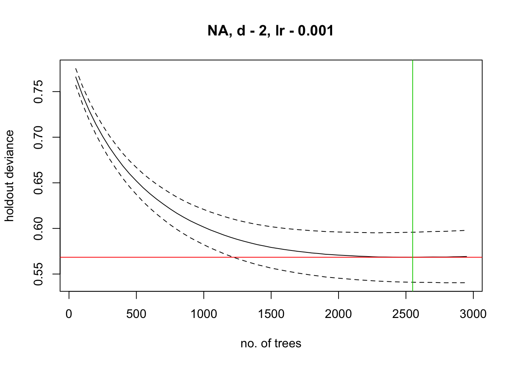
We have also assessed model performance on training data last week. To simplify the next working steps, we write functions that automatically perform internal validation (on training data) or cross-validation for our models. These functions are mainly meant to show you how you can automate your workflow. It is certainly not the single best way to do it. Also, there are packages available like biomod2 which will do the model fitting and cross-validation plus ensemble for you. Check them out.
We first define several functions for making predictions, cross-validation and calculating performance measures
# First, a function for deriving predictions. This function first determines which algorithm was used for model calibration, and then makes predictions using this algorithm.
make.preds <- function(model, newdata) {
require(dismo)
require(gam)
require(rpart)
require(randomForest)
require(gbm)
require(maxnet)
switch(class(model)[1],
Bioclim = predict(model, newdata),
Domain = predict(model, newdata),
glm = predict(model, newdata, type='response'),
Gam = predict(model, newdata, type='response'),
rpart = predict(model, newdata),
randomForest = predict(model, newdata, type='prob')[,2],
gbm = predict.gbm(model, newdata,
n.trees=model$gbm.call$best.trees, type="response"),
maxnet = predict(model, newdata, type="logistic"))
}
#------------------------
# Second, a function for deriving cross-validated predictions. The function partitions the data into k folds, determines the model algorithm, updates the model for the new training data and makes predictions to the hold-out data using this algorithm.
crossval.preds <- function(model, traindat, colname_species, colname_pred,
env_r, colname_coord, kfold) {
require(dismo)
require(gam)
require(rpart)
require(randomForest)
require(gbm)
require(maxnet)
# Make k-fold data partitions
ks <- kfold(traindat, k = kfold, by = traindat[,colname_species])
cross_val_preds <- data.frame(row = row.names(traindat),
cross_val_preds = numeric(length = nrow(traindat)))
for(i in seq_len(kfold)){
cv_train <- traindat[ks!=i,]
cv_test <- traindat[ks==i,]
# Because we used the gbm.step() for BRTs, we need a small work-around:
if (class(model)[1]=='gbm') {
cv_train_gbm <- cv_train;
names(cv_train_gbm)[names(cv_train_gbm)==colname_species] <-
model$response.name
}
# We update the model for the new training data
modtmp <- switch(class(model)[1],
Bioclim = bioclim(env_r[[colname_pred]], cv_train[cv_train[, colname_species]==1, colname_coord]),
Domain = domain(env_r[[colname_pred]], cv_train[cv_train[, colname_species]==1, colname_coord]),
glm = update(model, data=cv_train),
Gam = update(model, data=cv_train),
rpart = update(model, data=cv_train),
randomForest = update(model, data=cv_train),
gbm = gbm(model$call, 'bernoulli', data=cv_train_gbm[,c(colname_pred,model$response.name)], n.trees=model$gbm.call$best.trees, shrinkage=model$gbm.call$learning.rate, bag.fraction=model$gbm.call$bag.fraction, interaction.depth=model$gbm.call$tree.complexity),
maxnet = maxnet(p= cv_train[,colname_species], data= cv_train[,colname_pred]))
# We make predictions for k-fold:
if (class(model)[1]=='gbm') {
cross_val_preds[which(ks==i),2] <-
predict.gbm(modtmp, cv_test[, colname_pred], n.trees=model$gbm.call$best.trees, type="response")
} else {
cross_val_preds[which(ks==i),2] <- make.preds(modtmp, cv_test[, colname_pred])
}
}
cross_val_preds[,2]
}
#------------------------
# Third, a function for calculating performance measures for a vector of predictions:
calc.eval <- function(dat, colname_species, preds, thresh_method='MaxSens+Spec'){
require(PresenceAbsence)
require(dismo)
# Helper functions - we had defined them before in "SDM_functions.r". However,
# if we want this code to be independent, we have to insert the functions here again.
# True Skill Statistic:
TSS = function(cmx){
PresenceAbsence::sensitivity(cmx, st.dev=F) +
PresenceAbsence::specificity(cmx, st.dev=F) - 1
}
# Explained deviance:
d.square <- function(obs, pred, family='binomial'){
pred <- ifelse(pred<.00001,.00001,ifelse(pred>.9999,.9999,pred))
null_pred <- rep(mean(obs), length(obs))
1 - (calc.deviance(obs, pred, family=family) /
calc.deviance(obs, null_pred, family=family))
}
# Prepare data set to optimise threshold for binarising:
thresh_dat <- data.frame(ID=seq_len(nrow(dat)),
obs = dat[, colname_species],
pred = preds)
# Find optimal threshold
thresh <- optimal.thresholds(DATA= thresh_dat)
# Prepare confusion matrix
cmx_maxSSS <- cmx(DATA= thresh_dat, threshold=thresh[thresh$Method==thresh_method,2])
# Output data frame with performance statistics and optimal threshold:
data.frame(AUC = PresenceAbsence::auc(thresh_dat, st.dev=F),
TSS = TSS(cmx_maxSSS),
Sens = PresenceAbsence::sensitivity(cmx_maxSSS, st.dev=F),
Spec = PresenceAbsence::specificity(cmx_maxSSS, st.dev=F),
PCC = PresenceAbsence::pcc(cmx_maxSSS, st.dev=F),
D2 = d.square(thresh_dat$obs, thresh_dat$pred),
thresh = thresh[thresh$Method==thresh_method,2])
}We can now use the functions above to automatise our model assessment for all models. First, we assess performance on training data:
# Select which models, which we want to assess:
our_models <- c('m_bc', 'm_dom', 'm_glm', 'm_gam', 'm_cart', 'm_rf', 'm_brt', 'm_maxent')
# Now we make predictions on training data:
train_preds <- sapply(our_models, FUN=function(m){make.preds(eval(parse(text=m)), sp_thinned[, my_preds])})
# Assess internal model performance:
train_perf <- data.frame(sapply(our_models, FUN=function(x){calc.eval(sp_thinned, 'Turdus_torquatus', train_preds[,x])}))
summary(train_preds)## m_bc m_dom m_glm
## Min. :0.00000 Min. :0.08658 Min. :0.000839
## 1st Qu.:0.00000 1st Qu.:0.45914 1st Qu.:0.009624
## Median :0.02667 Median :0.57340 Median :0.042567
## Mean :0.13493 Mean :0.57015 Mean :0.134409
## 3rd Qu.:0.18667 3rd Qu.:0.69343 3rd Qu.:0.166708
## Max. :0.93333 Max. :0.79918 Max. :0.934014
## m_gam m_cart m_rf m_brt
## Min. :0.0001229 Min. :0.01254 Min. :0.0000 Min. :0.02521
## 1st Qu.:0.0040391 1st Qu.:0.01254 1st Qu.:0.0000 1st Qu.:0.02521
## Median :0.0370343 Median :0.01254 Median :0.0040 Median :0.04276
## Mean :0.1344086 Mean :0.13441 Mean :0.1339 Mean :0.13462
## 3rd Qu.:0.1872089 3rd Qu.:0.23944 3rd Qu.:0.1180 3rd Qu.:0.15411
## Max. :0.9346471 Max. :0.90000 Max. :0.9700 Max. :0.69334
## m_maxent
## Min. :0.0003578
## 1st Qu.:0.0096631
## Median :0.0751158
## Mean :0.1991466
## 3rd Qu.:0.3332930
## Max. :0.9998280train_perf## m_bc m_dom m_glm m_gam m_cart m_rf
## AUC 0.8321049 0.7860594 0.8983299 0.9020842 0.8976674 1
## TSS 0.5853416 0.4807453 0.6635197 0.6800828 0.6954865 1
## Sens 0.84 0.7333333 0.8933333 0.8933333 0.9066667 1
## Spec 0.7453416 0.747412 0.7701863 0.7867495 0.7888199 1
## PCC 0.7580645 0.7455197 0.7867384 0.8010753 0.8046595 1
## D2 0.1580936 -1.003855 0.3525447 0.3748025 0.3929498 0.8121605
## thresh 0.09 0.66 0.11 0.13 0.165 0.465
## m_brt m_maxent
## AUC 0.9168392 0.9023326
## TSS 0.7049275 0.6814907
## Sens 0.8933333 0.8533333
## Spec 0.8115942 0.8281573
## PCC 0.8225806 0.8315412
## D2 0.3772473 0.3214855
## thresh 0.09 0.31Second, we assess performance on cross-validated data.
# Make cross-validated predictions:
crossval_preds <- sapply(our_models, FUN=function(m){crossval.preds(eval(parse(text=m)), traindat=sp_thinned, colname_species='Turdus_torquatus', colname_pred=my_preds, env_r=bio_curr, colname_coord=c('EASTING','NORTHING'), kfold=5)})
# Assess cross-validated model performance
crossval_perf <- data.frame(sapply(our_models, FUN=function(x){calc.eval(sp_thinned,'Turdus_torquatus',crossval_preds[,x])}))
summary(crossval_preds)## m_bc m_dom m_glm m_gam
## Min. :0.00000 Min. :0.08485 Min. :0.000650 Min. :0.000093
## 1st Qu.:0.00000 1st Qu.:0.44321 1st Qu.:0.009868 1st Qu.:0.003783
## Median :0.03333 Median :0.56705 Median :0.042180 Median :0.035002
## Mean :0.13280 Mean :0.56117 Mean :0.135773 Mean :0.134861
## 3rd Qu.:0.16667 3rd Qu.:0.68575 3rd Qu.:0.172324 3rd Qu.:0.184280
## Max. :0.93333 Max. :0.80835 Max. :0.931675 Max. :0.937813
## m_cart m_rf m_brt m_maxent
## Min. :0.00000 Min. :0.0000 Min. :0.02394 Min. :0.0004593
## 1st Qu.:0.01190 1st Qu.:0.0000 1st Qu.:0.02715 1st Qu.:0.0114909
## Median :0.01581 Median :0.0050 Median :0.04455 Median :0.0665295
## Mean :0.13260 Mean :0.1342 Mean :0.13373 Mean :0.1980223
## 3rd Qu.:0.20833 3rd Qu.:0.1098 3rd Qu.:0.15768 3rd Qu.:0.3206567
## Max. :0.88889 Max. :0.9710 Max. :0.74891 Max. :0.9999040crossval_perf## m_bc m_dom m_glm m_gam m_cart m_rf
## AUC 0.8099793 0.7735818 0.8936094 0.8891373 0.7872878 1
## TSS 0.5204969 0.4464596 0.6655901 0.6469565 0.6113458 1
## Sens 0.8 0.7466667 0.8933333 0.8933333 0.8266667 1
## Spec 0.7204969 0.699793 0.7722567 0.7536232 0.7846791 1
## PCC 0.7311828 0.7060932 0.7885305 0.7724014 0.7903226 1
## D2 -0.02810185 -0.9713565 0.3406979 0.3407686 0.04824155 0.8123784
## thresh 0.08 0.63 0.11 0.11 0.135 0.465
## m_brt m_maxent
## AUC 0.8729055 0.8915114
## TSS 0.6267495 0.6720497
## Sens 0.84 0.8666667
## Spec 0.7867495 0.805383
## PCC 0.7939068 0.8136201
## D2 0.280715 0.2857033
## thresh 0.09 0.27We have gathered all information now that we need for making ensembles: model predictions, optimal thresholds for binary predictions, and evaluation statistics. The prediction could be combined into ensembles in different ways:
- mean of probabilities
- median of probabilities
- weighted mean of probabilities (weighted by model performance)
- committee averaging of binary predictions (what is the proportion of models predicting a presence?)
# Mean of probabilities
mean_prob <- rowMeans(crossval_preds)
# Median of probabilities
median_prob <- apply(crossval_preds, 1, median)
# Weighted mean of probabilities, weighted by TSS
wmean_prob <- apply(crossval_preds, 1, weighted.mean, w=unlist(crossval_perf['TSS',]))
# Committee averaging of binary predictions: calculates the proportion of models that predict the species to be present.
committee_av <- rowSums(sapply(our_models, FUN=function(x){ ifelse(crossval_preds[,x]>=crossval_perf['thresh',x],1,0)} ))/length(our_models)
# We can also calculate uncertainty measures, e.g. the standard deviation when making ensembles of mean probabilities.
sd_prob <- apply(crossval_preds, 1, sd)Thus, ensembles can be easily constructed by hand. To make our live easier and automatise our workflow, we nevertheless put it into a function now:
# Define a function for deriving ensembles:
make.ensemble <- function(preds, eval_metric, thresh){
# "preds" is a data.frame containing predictions for different algorithms.
# "eval_metric" is a vector with same length as number of columns in preds. It provides the evaluation metric used for weighting probabilities.
# "thresh" is a vector with same length as number of columns in preds. It provides the algorithm-specific threshold for making binary predictions.
data.frame(mean_prob = rowMeans(preds),
median_prob = apply(preds,1,median),
wmean_prob = apply(preds,1,weighted.mean, w=eval_metric),
committee_av = rowSums(sapply(seq_len(ncol(preds)), FUN=function(x){
ifelse(preds[,x]>=thresh[x],1,0)}))/ncol(preds),
sd_prob = apply(preds,1,sd))
}Now, we can simply apply this function to all our models of interest, make ensemble predictions and assess model performance.
# Make ensemble predictions:
ensemble_preds <- make.ensemble(crossval_preds, unlist(crossval_perf['TSS',]), unlist(crossval_perf['thresh',]))
# Evaluate ensemble predictions:
ensemble_perf <- sapply(names(ensemble_preds)[1:4], FUN=function(x){calc.eval(sp_thinned, 'Turdus_torquatus', ensemble_preds[,x])})
summary(ensemble_preds)## mean_prob median_prob wmean_prob committee_av
## Min. :0.01739 Min. :0.000694 Min. :0.01389 Min. :0.0000
## 1st Qu.:0.06592 1st Qu.:0.010388 1st Qu.:0.04886 1st Qu.:0.0000
## Median :0.10754 Median :0.041320 Median :0.08568 Median :0.0000
## Mean :0.19539 Mean :0.147002 Mean :0.17909 Mean :0.2968
## 3rd Qu.:0.28837 3rd Qu.:0.220147 3rd Qu.:0.27721 3rd Qu.:0.7500
## Max. :0.71810 Max. :0.814678 Max. :0.75988 Max. :1.0000
## sd_prob
## Min. :0.02949
## 1st Qu.:0.15171
## Median :0.18723
## Mean :0.18177
## 3rd Qu.:0.20845
## Max. :0.34161ensemble_perf## mean_prob median_prob wmean_prob committee_av
## AUC 0.9294962 0.9066943 0.9464458 0.9335542
## TSS 0.7396273 0.6913458 0.7840166 0.6752795
## Sens 0.9466667 0.9066667 0.96 0.8533333
## Spec 0.7929607 0.7846791 0.8240166 0.8219462
## PCC 0.8136201 0.8010753 0.8422939 0.8261649
## D2 0.3283978 0.3795954 0.4002493 -0.007735784
## thresh 0.21 0.14 0.21 0.685Let’s plot the response surfaces for the ensembles.
library(RColorBrewer)
library(lattice)
cls <- colorRampPalette(rev(brewer.pal(11, 'RdYlBu')))(100)
# We prepare our grid of environmental predictors:
xyz <- expand.grid(
seq(min(sp_thinned[,my_preds[1]]),max(sp_thinned[,my_preds[1]]),length=50),
seq(min(sp_thinned[,my_preds[2]]),max(sp_thinned[,my_preds[2]]),length=50))
names(xyz) <- my_preds
# Make predictions of all models and make ensembles:
xyz_preds <- sapply(our_models, FUN=function(m){make.preds(eval(parse(text=m)), xyz)})
xyz_ensemble <- make.ensemble(xyz_preds, unlist(crossval_perf['TSS',]), unlist(crossval_perf['thresh',]))
# Plot ensemble of mean probabilities:
xyz$z <- xyz_ensemble[,'mean_prob']
wireframe(z ~ bio11 + bio17, data = xyz, zlab = list("Occurrence prob.", rot=90), drape = TRUE, col.regions = cls, scales = list(arrows = FALSE), zlim = c(0, 1), main='Ensemble: mean prob', xlab='bio11', ylab='bio17', screen=list(z = -40, x = -70, y = 3))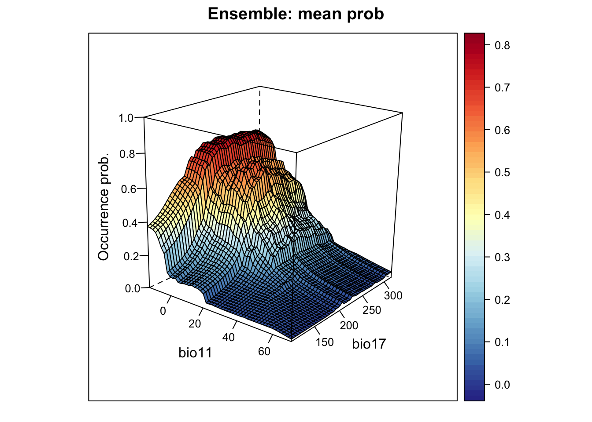
# Plot ensemble of median probabilities:
xyz$z <- xyz_ensemble[,'median_prob']
wireframe(z ~ bio11 + bio17, data = xyz, zlab = list("Occurrence prob.", rot=90), drape = TRUE, col.regions = cls, scales = list(arrows = FALSE), zlim = c(0, 1), main='Ensemble: median prob', xlab='bio11', ylab='bio17', screen=list(z = -40, x = -70, y = 3))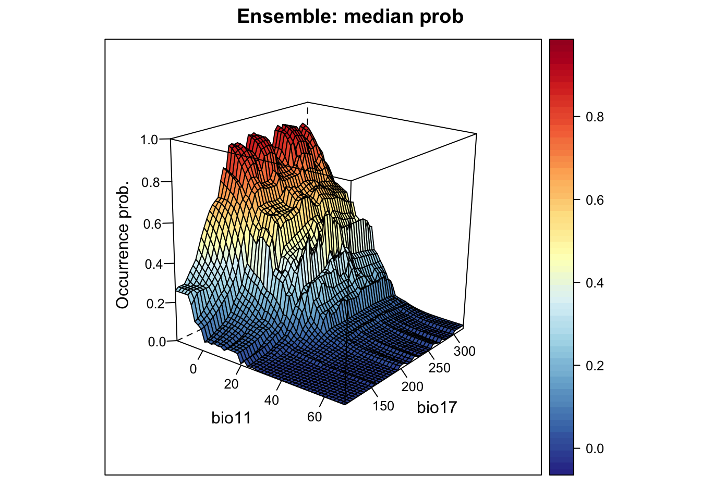
# Plot ensemble of weighted mean probabilities:
xyz$z <- xyz_ensemble[,'wmean_prob']
wireframe(z ~ bio11 + bio17, data = xyz, zlab = list("Occurrence prob.", rot=90), drape = TRUE, col.regions = cls, scales = list(arrows = FALSE), zlim = c(0, 1), main='Ensemble: weighted mean prob', xlab='bio11', ylab='bio17', screen=list(z = -40, x = -70, y = 3))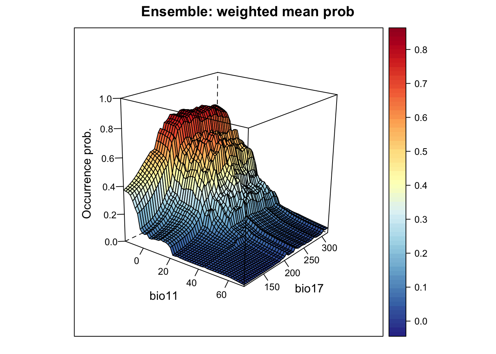
# Plot ensemble of committee average:
xyz$z <- xyz_ensemble[,'committee_av']
wireframe(z ~ bio11 + bio17, data = xyz, zlab = list("Occurrence prob.", rot=90), drape = TRUE, col.regions = cls, scales = list(arrows = FALSE), zlim = c(0, 1), main='Ensemble: committee average', xlab='bio11', ylab='bio17', screen=list(z = -40, x = -70, y = 3))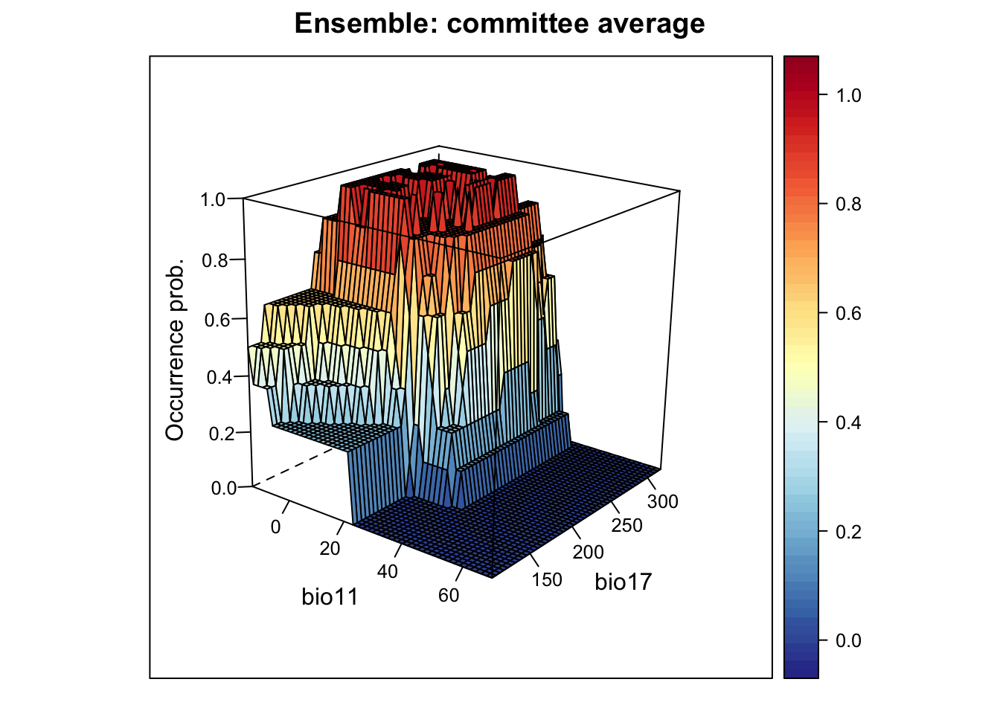
# Plot standard deviation of mean probabilities. This gives us an indication where in environmental space we have highest uncertainty:
xyz$z <- xyz_ensemble[,'sd_prob']
wireframe(z ~ bio11 + bio17, data = xyz, zlab = list("Occurrence prob.", rot=90), drape = TRUE, col.regions = cls, scales = list(arrows = FALSE), zlim = c(0, 1), main='Ensemble: sd', xlab='bio11', ylab='bio17', screen=list(z = -40, x = -70, y = 3))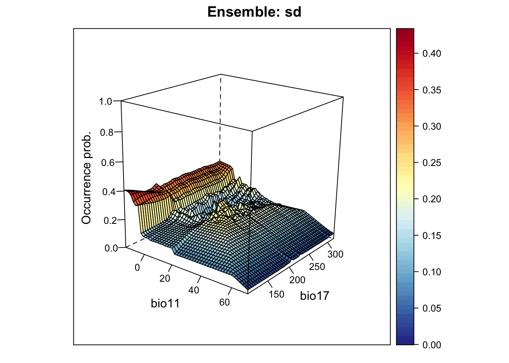
Finally, let’s do some mapping. We first map the occurrence probabilities predicted by the different algorithms as well as the potential presences.
# Prepare data frame with environmental data
UK_dat <- data.frame(rasterToPoints(bio_curr[[my_preds]]))
# We make predictions of all models:
env_preds <- data.frame(UK_dat[,1:2], sapply(our_models, FUN=function(m){make.preds(eval(parse(text=m)), UK_dat )}))
# Binarise predictions of all algorithms
env_preds_bin <- data.frame(UK_dat[,1:2], sapply(our_models, FUN=function(x){ifelse(env_preds[,x]>= unlist(crossval_perf['thresh',x]),1,0)}))
# Make rasters from predictions:
r_preds <- rasterFromXYZ(env_preds, crs=proj_UK)
r_preds_bin <- rasterFromXYZ(env_preds_bin, crs=proj_UK)
# Map predicted occurrence probabilities:
spplot(r_preds)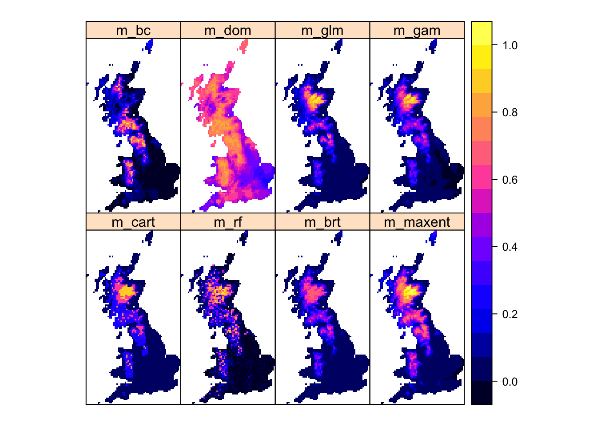
# Map predicted presences:
spplot(r_preds_bin)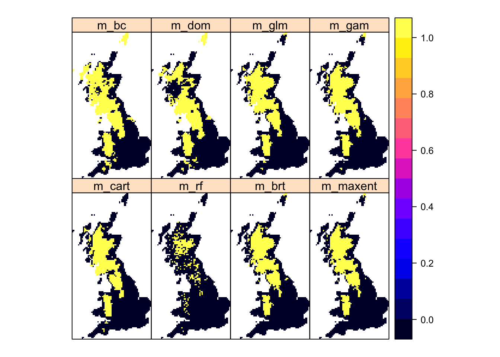
Now, we map the ensemble predictions.
# We make ensembles:
env_ensemble <- data.frame(UK_dat[,1:2], make.ensemble(env_preds[,-c(1:2)], unlist(crossval_perf['TSS',]), unlist(crossval_perf['thresh',])))
# Make rasters from ensemble predictions:
r_ens <- rasterFromXYZ(env_ensemble, crs=proj_UK)
# Map continuous ensemble predictions:
spplot(r_ens[[1:4]])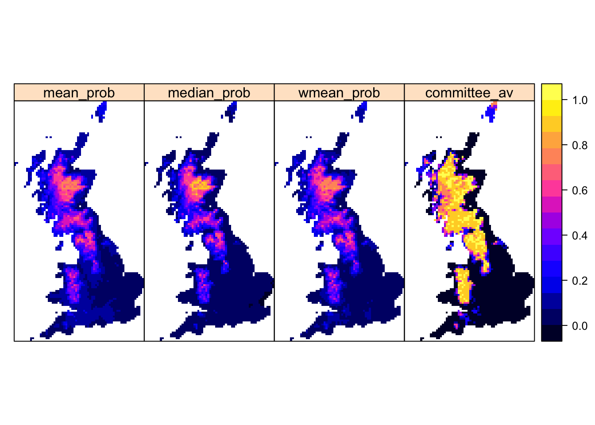
Mapping the standard deviation of model predictions shows us the areas of highest deviation between model algorithms.
# Map standard deviation across model algorithms:
plot(r_ens[['sd_prob']])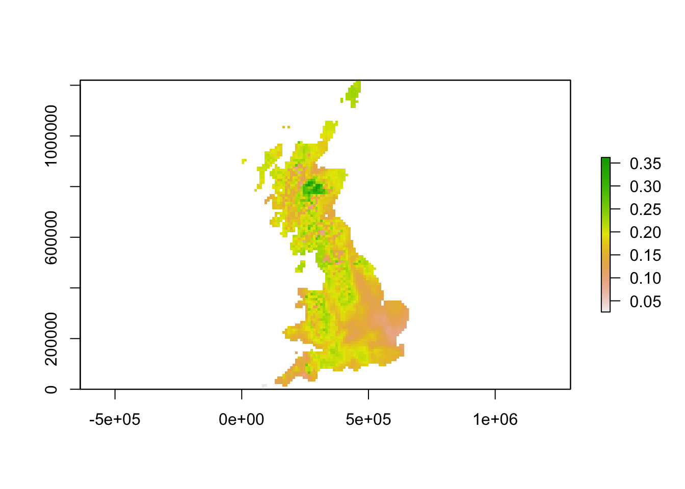
We can also derive binary ensemble predictions. We have already estimated the optimal thresholds when calculating the performance measures for the ensembles.
# Binarise ensemble predictions
env_ensemble_bin <- data.frame(UK_dat[,1:2], sapply(c('mean_prob', 'median_prob', 'wmean_prob'), FUN=function(x){ifelse(env_ensemble[,x]>= unlist(ensemble_perf['thresh',x]),1,0)}))
# Make rasters:
r_ens_bin <- rasterFromXYZ(env_ensemble_bin, crs=proj_UK)
# Map predicted presence from ensembles:
spplot(r_ens_bin) 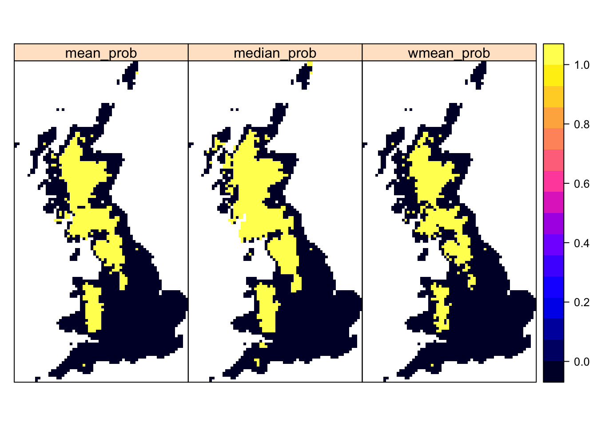
Araujo, Miguel B., and Mark New. 2007. “Ensemble Forecasting of Species Distributions.” Trends in Ecology and Evolution 22: 42–47.
Dormann, Carsten F., Justin M. Calabrese, Gurutzeta Guillera-Arroita, Eleni Matechou, Volker Bahn, Kamil Barton, Colin M. Beale, et al. 2018. “Model Averaging in Ecology: A Review of Bayesian, Information-Theoretic, and Tactical Approaches for Predictive Inference.” Ecological Monographs 88 (4): 485–504. https://doi.org/10.1002/ecm.1309.
Elith, J., C. H. Graham, R. P. Anderson, M. Dudik, S. Ferrier, A. Guisan, R. J. Hijmans, et al. 2006. “Novel Methods Improve Prediction of Species’ Distribution from Occurence Data.” Ecography 29: 129–51.
Gillings, Simon, Dawn E. Balmer, Brian J. Caffrey, Iain S. Downie, David W. Gibbons, Peter C. Lack, James B. Reid, J. Tim R. Sharrock, Robert L. Swann, and Robert J. Fuller. 2019. “Breeding and Wintering Bird Distributions in Britain and Ireland from Citizen Science Bird Atlases.” Global Ecology and Biogeography 28 (7): 866–74. https://doi.org/10.1111/geb.12906.
Guisan, A., W. Thuiller, and N. E. Zimmermann. 2017. Habitat Suitability and Distribution Models with Applications in R. Cambride University Press.
Thuiller, W., M. Guéguen, J. Renaud, D. N. Karger, and N. E. Zimmermann. 2019. “Uncertainty in Ensembles of Global Biodiversity Scenarios.” Nature Communications 10: 1446.
Thuiller, W., B. Lafourcade, R. Engler, and M. B. Araujo. 2009. “BIOMOD - a Platform for Ensemble Forecasting of Species Distributions.” Ecography 32: 369–73.
Vuuren, Detlef P. van, and Timothy R. Carter. 2013. “Climate and Socio-Economic Scenarios for Climate Change Research and Assessment: Reconciling the New with the Old.” Climatic Change 122 (November): 415–29.